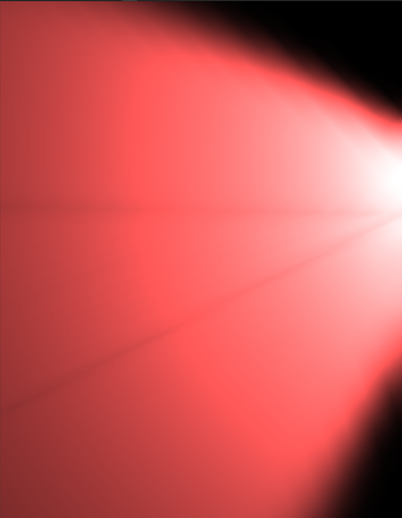
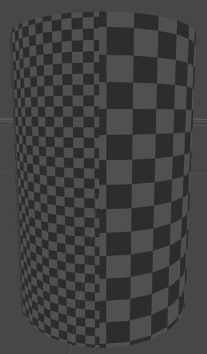
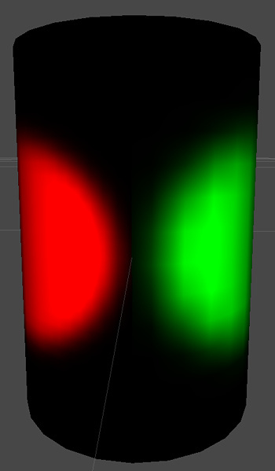

Unity will use UV2 for lightmaps, if the channel is present. Otherwise it will use primary UVs.
Unity can unwrap your mesh for you to generate lightmap UVs. Just use the Generate Lightmap UVs setting in Mesh Import Settings.
Advanced Options for Generate Lightmap UVs:
| Property: | Function: |
|---|---|
| Pack Margin | The margin between neighboring patches, assuming the mesh will take entire 1024x1024 lightmap measured in pixels. That has great effect: to allow filtering, Lightmap will contain lighting information in texels near patch border. So to avoid light bleeding when applying Lightmap there should be some margin between patches. |
| Hard Angle | The angle between neighboring triangles, after which the edge between them will be considered hard edge and seam will be created. If you set it to 180 degrees all edges will be considered smooth: this is useful for organic models. The default value 88 degrees: this is useful for mechanical models |
| Angle Error | Maximum possible deviation of UVs angles from source geometry angles, in percentage. Basically it controls how similar triangles in uv space will be to triangles in original geometry (the value, the more similar triangles will be). Usually you wants it pretty low to avoid artifacts when applying Lightmap. Default is 8 percent. (This value goes from 0 to 100) |
| Area Error | Maximum possible deviation of UVs areas from source geometry areas, in percentage. Basically it controls how good relative triangle areas are preserved. Usually that is not very critical, and moving that up can allow to create less patches; although you should recheck that distortion does not deteriorate Lightmap quality, as that way triangles may have different resolution. Default is 15 percent. (This value goes from 0 to 100) |
If you prefer to provide your own UVs for lightmapping, remember that a good UV set for lightmapping:
Some examples of the hints suggested above:
These screenshots were made for equal resolution, but with different uvs. Look at artefacts, and how the shape of light was slightly changed. There are only 4 triangles, actually, so shape distortion can be far uglier.

There are 2 spotlight with same parameters, the difference being only pointing to areas with different lightmap resolution, due to relative triangle scale being not preserved
 